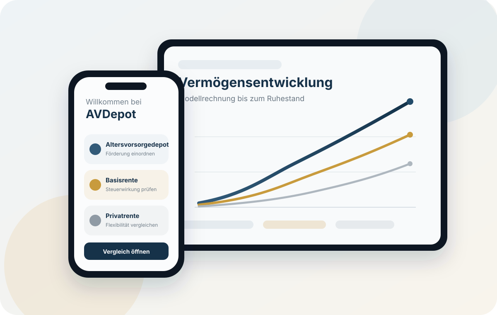
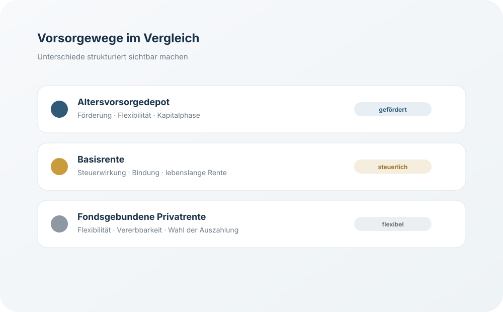

01
Förderung & Nettoaufwand
Beiträge, mögliche Zulagen, steuerliche Effekte und persönlicher Nettoaufwand werden nachvollziehbar dargestellt.
AVDepot verbindet Rechner, Analyse und Vergleich in einer App. Altersvorsorgedepot, Basisrente und fondsgebundene Privatrente lassen sich strukturiert gegenüberstellen – verständlich für die eigene Planung und ausführlich genug für die Beratung.

AVDepot konzentriert sich auf die Punkte, die bei einer langfristigen Vorsorgeentscheidung tatsächlich relevant sind – ohne die Oberfläche mit unnötiger Komplexität zu überladen.
Beiträge, mögliche Zulagen, steuerliche Effekte und persönlicher Nettoaufwand werden nachvollziehbar dargestellt.
Modellrechnungen zeigen, wie sich unterschiedliche Annahmen langfristig auf die Altersvorsorge auswirken können.
Nicht nur ansparen: Auch die spätere Verwendung des Kapitals und unterschiedliche Auszahlungswege werden berücksichtigt.

AVDepot betrachtet unterschiedliche Vorsorgeschichten und macht deren jeweilige Logik sichtbar. So lassen sich nicht nur Renditeannahmen, sondern auch steuerliche Behandlung, Flexibilität und spätere Auszahlung einordnen.
Die Grundfunktionen bleiben bewusst übersichtlich. Erweiterte Analysen, Szenarien und Beratungsfunktionen stehen in Pro zur Verfügung.
Für einen schnellen, verständlichen Einstieg in Berechnung und Vergleich.
Kostenloser Einstieg
Für individuelle Szenarien, ausführlichere Ergebnisse und den Einsatz im Kundengespräch.
Einmalige Freischaltung · kein Abonnement
Die App nutzt den verfügbaren Platz sinnvoll, statt die gleiche Oberfläche einfach nur größer darzustellen.
Schneller Rechner, verständliche Analyse, kompakter Vergleich und einfache Szenarien für die persönliche Planung unterwegs.
Mehr Raum für Beratung, strukturierte Vergleiche, Kundenpräsentation und ausführlichere Analyse.
Die App befindet sich vor der Veröffentlichung im App Store. Nach Freigabe wird hier der direkte App-Store-Link ergänzt.